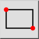
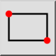
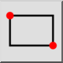
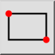

Rectangulo
Barra de herramienta / icono:
 

Menú: Dibujar > Forma > Rectangulo
Acceso directo: R, E
Comandos: rectangle | linerectangle | rect | re
Esta es una traducción automática.
Barra de herramienta / icono:
 

Menú: Dibujar > Forma > Rectangulo
Acceso directo: R, E
Comandos: rectangle | linerectangle | rect | re
Utilice esta herramienta para crear formas rectangulares a partir de dos esquinas opuestas diagonalmente.